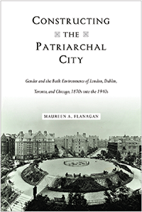

<body bgcolor="#FFFFFF" text="#000000" link="#0000FF" vlink="#CC0000" alink="#CC0000"><center><hr width="350" size="1" align="center" noshade>An original, comparative examination of how ideas about gender resulted in the consolidation of the patriarchal city in the Anglo-Atlantic urban world<hr width="350" size="1" align="center" noshade><p><a href="https://cdcshoppingcart.uchicago.edu/Cart/ChicagoBook.aspx?ISBN=&&PRESS=temple" target="_top">Buy this book!</a> | <a href="https://cdcshoppingcart.uchicago.edu/Cart/Cart.aspx?PRESS=temple" target="_top">View Cart</a> | <a href="https://cdcshoppingcart.uchicago.edu/Cart/Cart.aspx?PRESS=temple" target="_top">Check Out</a></p><p></p></center><!--none//--><h1 class = "booktitle">Constructing the Patriarchal City</h1> <h1 class = "subtitle">Gender and the Built Environments of London, Dublin, Toronto, and Chicago, 1870s into the 1940s</h1>
<h3>Maureen A. Flanagan </h3>
paper: $37.95, Apr 18<BR>EAN:&nbsp;978-1-4399-1570-7<BR><font color=#990033>Not Yet Published Preorder</FONT><font size=-7><br>&nbsp;</font></p><p class="info">cloth: $104.50, Apr 18<BR>EAN:&nbsp;978-1-4399-1569-1<BR><font color=#990033>Not Yet Published Preorder</FONT><font size=-7><br>&nbsp;</font></p><p class="info">e-book: $37.95, Apr 18<BR>EAN:&nbsp;978-1-4399-1571-4<BR><font color=#990033>Not Yet Published Preorder</FONT><font size=-7><br>&nbsp;</font></p></p></td></tr></table>
<BR> <p class="info">390 pp<BR> 6 x 9<BR> 14 halftones, 6 maps <p class="info"><font size=-7>&nbsp;</font></p><p class="info">
</P><BLOCKQUOTE></BLOCKQUOTE>
<p>In the Anglo-Atlantic world of the late nineteenth century, groups of urban residents struggled to reconstruct their cities in the wake of industrialization and to create the modern city. New professional men wanted an orderly city that functioned for economic development. Women's vision challenged the men's right to reconstruct the city and resisted the prevailing male idea that women in public caused the city's disorder. <i>Constructing the Patriarchal City </i>compares the ideas and activities of men and women in four English-speaking cities that shared similar ideological, professional, and political contexts. Historian Maureen Flanagan investigates how ideas about gender shaped the patriarchal city as men used their expertise in architecture, engineering, and planning to fashion a built environment for male economic enterprise and to confine women in the private home. Women consistently challenged men to produce a more equitable social infrastructure that included housing that would keep people inside the city, public toilets for women as well as men, housing for single, working women, and public spaces that were open and safe for all residents.<br>
<P CLASS="top"><A HREF="#top">BACK TO TOP</A></P>&nbsp;
<BR>&nbsp;
&nbsp;<P>
</P><BR>&nbsp;
<H2 class="inpageheading"><A NAME="author bio"></a>About the Author(s)</H2><p><b>Maureen A. Flanagan</b>&#8203; is Emerita Professor of History at the&#8203; Illinois Institute of Technology and Michigan State University&#8203;. She is the author of&#8203; <i>America Reformed: Progressives and Progressivisms, 1890s</i>- <i>1920s</i>&#8203;, <i>Seeing with Their Hearts: Chicago Women and the Vision of the Good City, 1871</i>- <i>1933</i>&#8203;, and <i>Charter Reform in Chicago.</i><br>
<P CLASS="top"><A HREF="#top">BACK TO TOP</A></P>
<p><h2 class="inpageheading"><a name="subjects"></a>Subject Categories</h2> <p><a href="http://www.temple.edu/tempress/history.html" target="_top">History</a> <br><a href="http://www.temple.edu/tempress/urban.html" target="_top">Urban Studies</a> <br><a href="http://www.temple.edu/tempress/gender.html" target="_top">Gender Studies</a> <br><a href="" target="_top"></a> <br><a href="" target="_top"></a> </p>
</p>
<P>
<h2 class="inpageheading">In the Series</h2>�
<p>�<a target="_top" href="http://www.temple.edu/tempress/urban_life.html" OnMouseOver="window.status='Click for other books in this series!';return true;"OnMouseOut="window.status=" ><i>Urban Life, Landscape, and Policy</i></a></P>
<p><p>
The <em>Urban Life, Landscape, and Policy</em> Series, edited by David Stradling, Larry Bennett, and Davarian Baldwin, was founded by the late Zane L. Miller to publish books that examine past and contemporary cities, focusing on cultural and social issues. The editors seek proposals that analyze processes of urban change relevant to the future of cities and their metropolitan regions, and that examine urban and regional planning, environmental issues, and urban policy studies, thus contributing to ongoing debates.
</p></P>
�</P>��
</P>
<p align="center"><a href="https://cdcshoppingcart.uchicago.edu/Cart/ChicagoBook.aspx?ISBN=&&PRESS=temple" target="_top">Buy this book!</a> | <a href="https://cdcshoppingcart.uchicago.edu/Cart/Cart.aspx?PRESS=temple" target="_top">View Cart</a> | <a href="https://cdcshoppingcart.uchicago.edu/Cart/Cart.aspx?PRESS=temple" target="_top">Check Out</a></p><p><font face="Arial" size="1"><a href="copyright.html" onMouseOver="window.status='Web Copyright Policy';return true;" onMouseOut="window.status=''" title="Web Copyright Policy">&copy;</a> 2018 <a href="http://www.temple.edu" target="new" onMouseOver="window.status='Link to Temple University home page';return true;" onMouseOut="window.status=''" title="Link to Temple University home page">Temple University</a>. All Rights Reserved. http://www.temple.edu/tempress/titles/2482_reg.html</font></p>